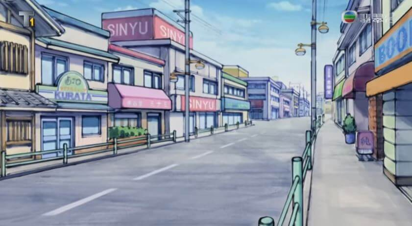
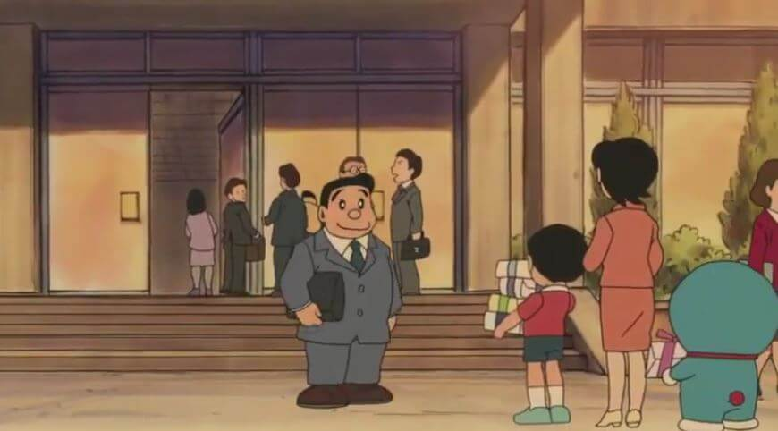

商店街

概述
有許多高樓大廈，和社區內明顯不同，路比較寬（還記得社區內傳統的道路嗎？路居然只夠一台汽車過去，不知道如果會車該怎麼辦）、車也多了些，人聲鼎沸，有電視台、電影院、百貨公司等。大雄等人常到市區的一間書店站著「看免錢的」，但老闆總是趕他們出去。
院子

爸爸的公司
爸爸的公司
爸爸的公司在有百貨公司的繁華商業區附近，不過離大雄他們的小鎮有點遠，需要搭擁擠的電車才能到。所以哆啦A夢與大雄曾經為此特別幫爸爸做了一個專屬的地下鐵，讓爸爸十分感動。